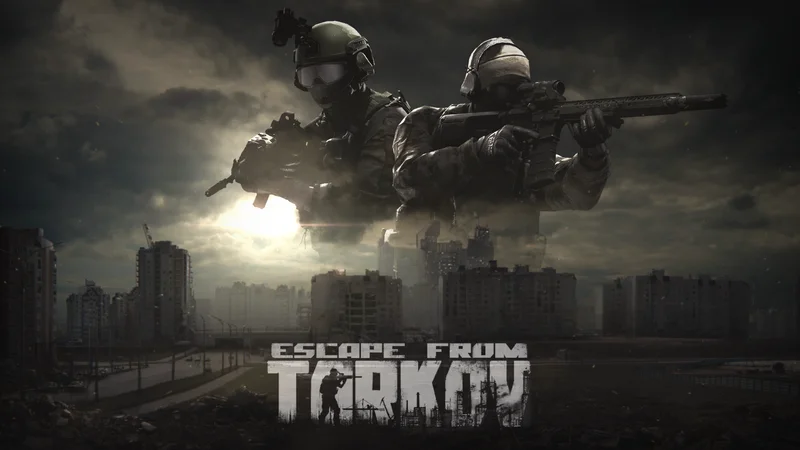

es un simulador de combate que mezcla acción en primera persona con elementos RPG dentro de un MMO con desarrollo
narrativo. También hay quien lo considera un videojuego de suspense debido a la tensión característica de este
juego, semejante a la que provocan los juegos de terror. El videojuego se ambienta en Tarkov, una ciudad de la
Rusia moderna, presa del caos en la que solo aquellos con las cualidades más aptas pueden sobrevivir, resolver
los misterios de Tarkov y salir con vida de la ciudad. e desarrolla en la ficticia región de Norvinsk en el
noroeste de Rusia, alrededor de una "zona económica especial" que sirvió como puerta de entrada entre Rusia y la
Unión Europea. Sin embargo, esto atrajo a corporaciones con intenciones dudosas, y la ciudad de Tarkov se
convirtió en el centro de un importante escándalo político que involucraba a corporaciones corruptas en la
región de Norvinsk. Seis meses después, la situación estalló en un conflicto armado que involucró a las Tropas
Internas de Rusia, las fuerzas de paz de las Naciones Unidas y dos compañías militares privadas: United Security
(USEC) y Battle Encounter Assault Regiment (BEAR). Las fronteras de la región de Norvinsk se sellaron y aquellos
atrapados en medio de la guerra local fueron aislados del mundo exterior. USEC fue contratada por el Grupo
Terra, una de las corporaciones corruptas involucradas en el escándalo, para obstaculizar las investigaciones
durante el conflicto, mientras que BEAR fue contratada por el gobierno ruso para descubrir evidencia que
demuestre las actividades ilícitas del Grupo Terra. El jugador tiene el objetivo principal de escapar de la
ciudad de Tarkov trabajando para una de estas compañías militares privadas.
Descargar "Escape from Tarkov"
